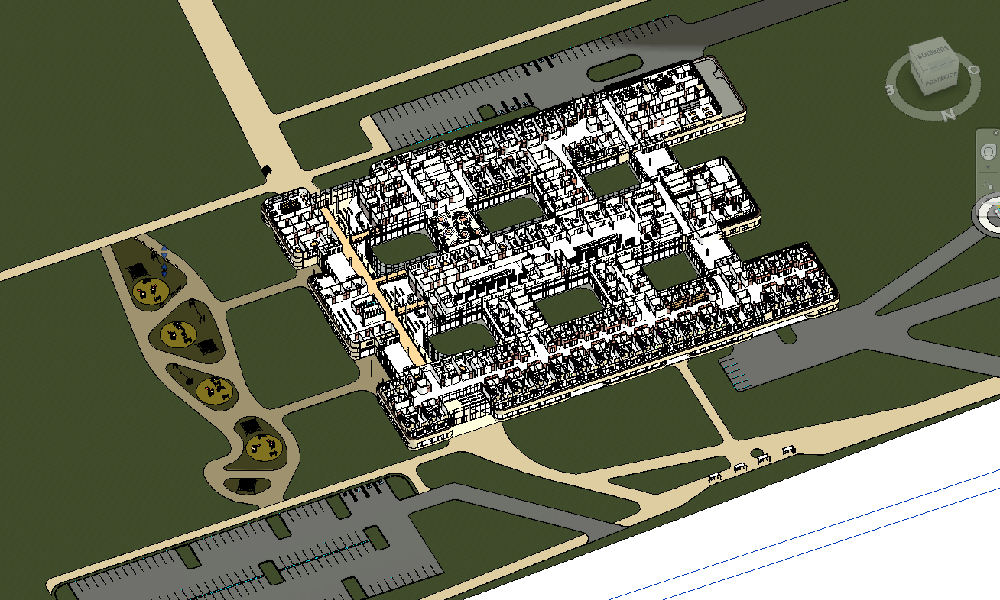
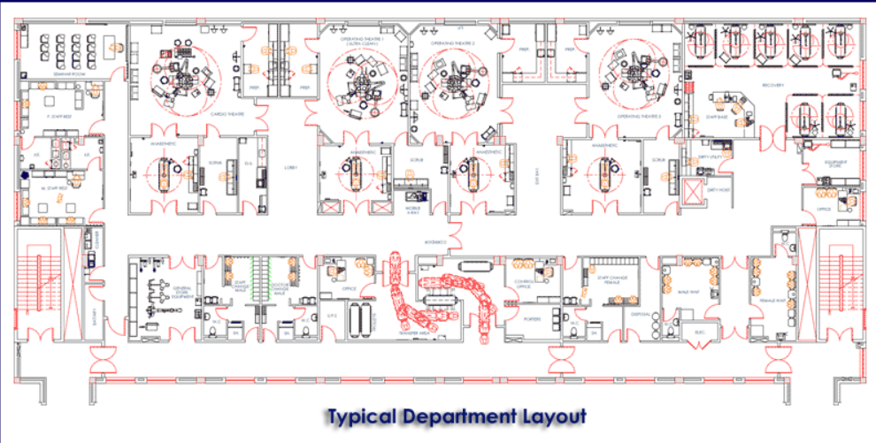
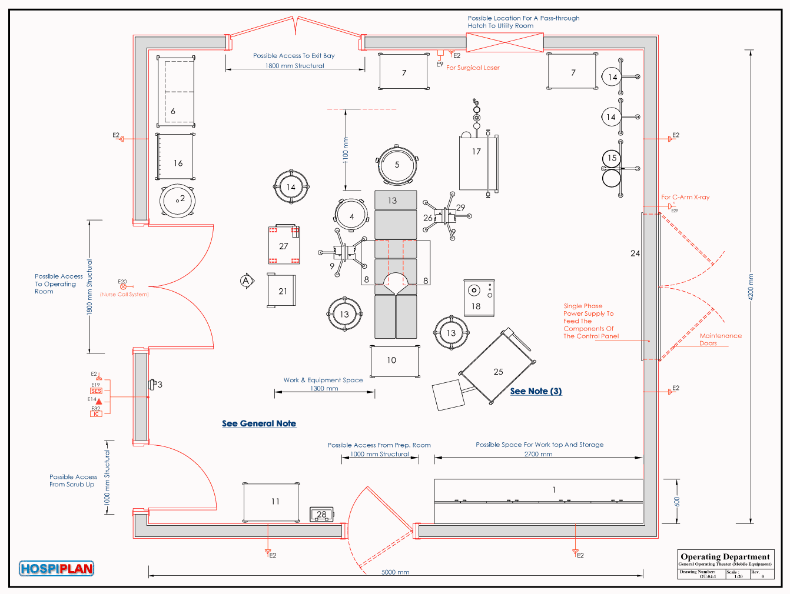

⚡
Electrobisturí
Equipamiento quirúrgico
Plataforma de aprendizaje en Ingeniería Clínica y Hospitalaria

Distribución de ambientes y circulación.
Plano pendiente de incorporarEquipamiento quirúrgico
Equipamiento anestésico
Se incorporarán más equipos a medida que se complete el inventario del área.
En esta sección se incorporará la información del área, incluyendo distribución arquitectónica, instalaciones, equipamiento y documentación técnica.
El contenido de esta sección se incorporará posteriormente.

Área destinada a la realización de procedimientos quirúrgicos y actividades relacionadas.

En esta sección se incorporará posteriormente la normativa correspondiente.
Es un equipo médico que utiliza energía eléctrica de alta frecuencia para realizar corte, coagulación o una combinación de ambos sobre tejidos durante procedimientos quirúrgicos.
Permite realizar cortes quirúrgicos y controlar el sangrado mediante diferentes modos de funcionamiento.
El carro o máquina de anestesia reúne los elementos necesarios para administrar y controlar la anestesia durante un procedimiento quirúrgico.
Permite administrar gases y agentes anestésicos y colaborar con el mantenimiento de la ventilación del paciente durante la intervención.